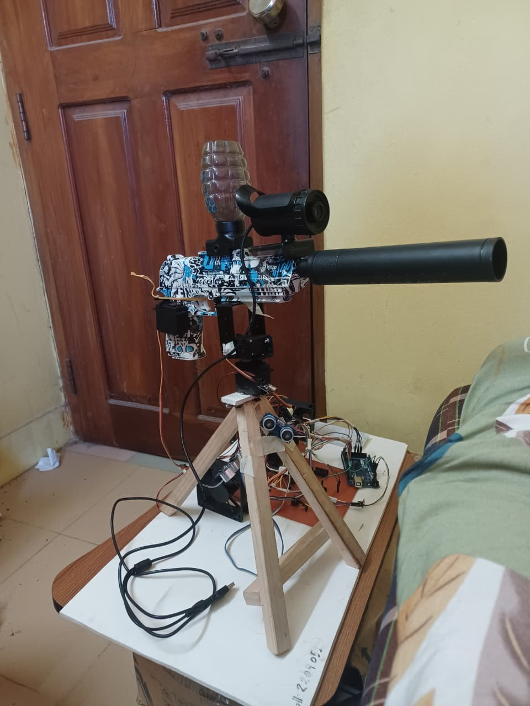
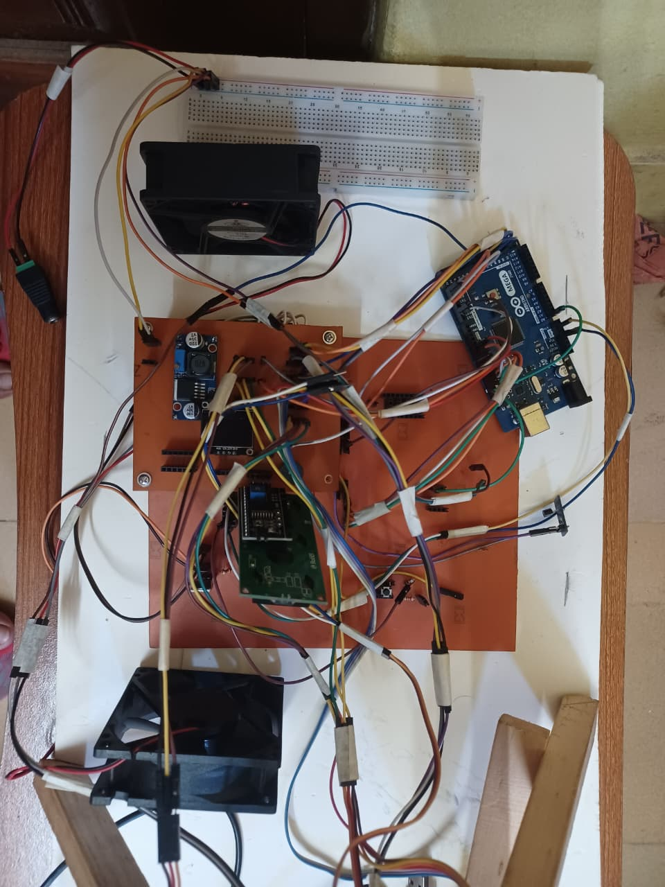
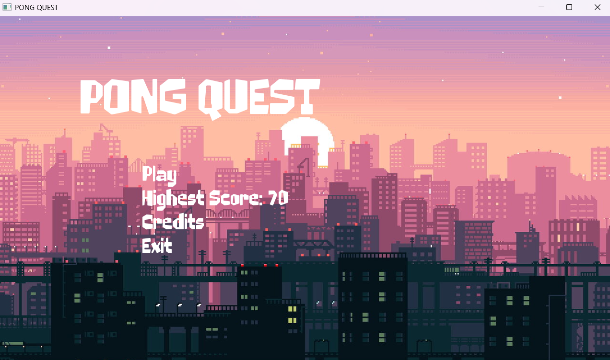
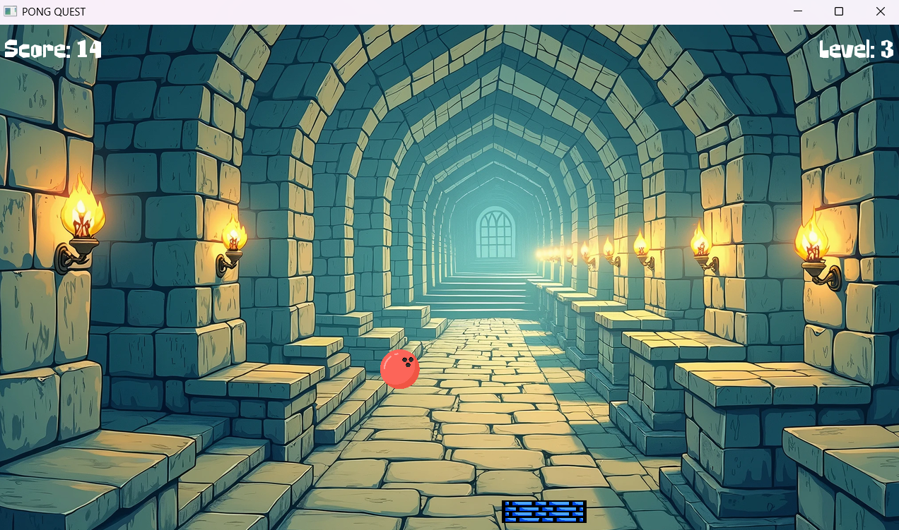
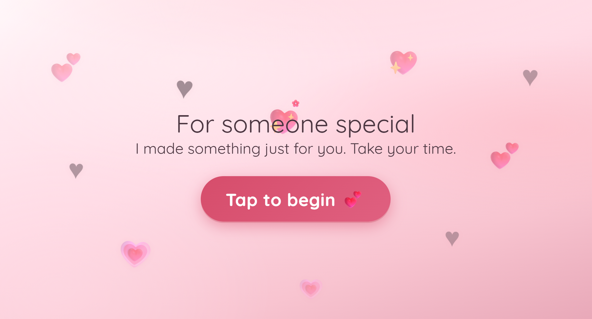

Projects & Experience
Selected projects built with HTML, CSS, and JavaScript.
VisionGuard51: AI‑Powered Neural Sentinel Turret
An AI-powered autonomous security turret capable of real-time human detection, face recognition, and automated targeting. Built using computer vision (YOLOv8, DeepFace) and embedded systems (Arduino), the system can track, classify, and respond to threats with both autonomous and manual control modes. Integrated with a Flask web dashboard and Telegram alerts for remote monitoring and control.


PONG QUEST (SFML Based C++ Game)
A classic paddle-and-ball arcade game built from scratch in C++ with SFML. Includes a menu flow (Play / Credits / Exit), live HUD (score, level, highest score), level progression (ball speed increases every 5 points), audio (music + game-over sound), and high-score persistence using a local text file.


Personal Portfolio Website
A multi-page portfolio site showcasing education, skills, and projects. Built with semantic HTML5, external CSS for responsive layout and theme support, and vanilla JavaScript for form validation and theme toggle. Fully responsive for desktop and mobile.

Romantic Surprise Website (Interactive Love Note)
A heartfelt surprise microsite with a two-round heart-catching mini-game that unlocks a personal message. Includes animated hearts, celebration effects, a “reasons why I love you” section, a hug popup moment, and optional background music.

Task Manager Web App
A simple task list application where users can add, complete, and remove tasks. Data is stored in the browser using localStorage. The UI includes clear feedback and works on different screen sizes.